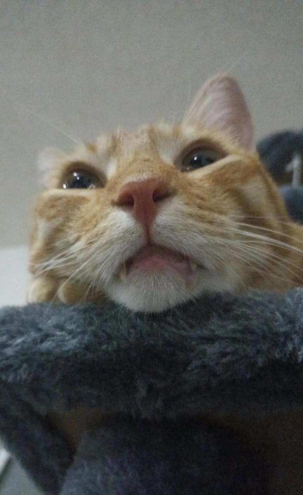

Chopper cocina
¡Bienvenidos a Chopper Cocina!
Somos un mini restaurante que se especializa en ofrecer una experiencia única, combinando la autenticidad de la comida mexicana con la alegría y aventura que representa Chopper, el entrañable personaje de la serie One Piece.
En Chopper Cocina, cada platillo es una mezcla de tradición y creatividad. Desde los tacos al pastor hasta las enchiladas y los burritos, cada bocado está diseñado para transportarte a los sabores más auténticos de México, mientras disfrutas del ambiente temático inspirado en el espíritu explorador de nuestro querido reno médico pirata.
Nuestra misión es ofrecer no solo una comida deliciosa, sino también una experiencia divertida y temática que hará que los fanáticos de One Piece y los amantes de la comida mexicana se sientan como en casa. Creemos en la importancia de los detalles, por eso, desde la decoración hasta los nombres de los platillos, todo está pensado para sumergirte en el mundo de la tripulación del Sombrero de Paja.
¡Ven a disfrutar de una aventura gastronómica en Chopper Cocina, donde el sabor y la diversión navegan juntos!
|  |